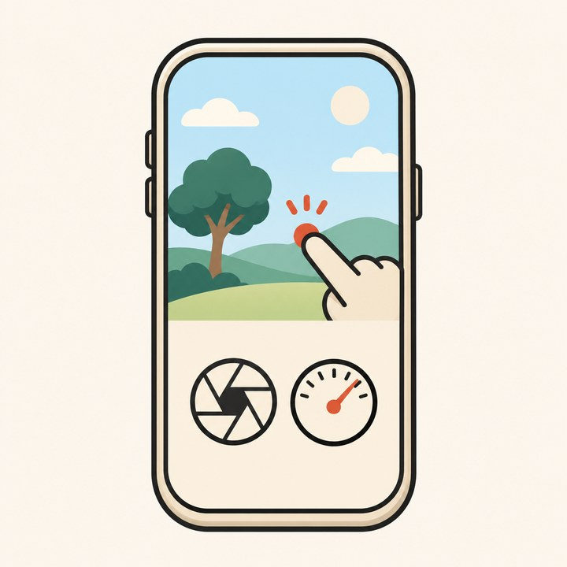

iPhone・iPad・Android の露出計
フィルムの1枚を、
ちょうどの明るさで。
フィルムのカメラで撮る人のための露出計です。端末のカメラで明るさを測り、フィルムの感度と、決めた絞りかシャッター速度から、もう片方を 1/3 段で出します。写真は撮らず、保存もしません。
App Store・Google Play で配信予定買い切りで全部の機能が使えます。アプリ内課金・サブスクリプション・広告はありません。

こんな困りごとのために
1段刻みでは細かく合わせられない
ISO・絞り・シャッター速度を 1/3 段（または 1/2 段）の目盛りで出します。ISO 160 や F4.5 も選べます。
毎回の設定が面倒
カメラとフィルムの組みを名前で保存して、開いたらすぐ測れます。
言葉が分からない
絞り・シャッター速度・ISO・EV の短い説明を画面に置きました。
値がずれている気がする
手持ちの露出計か晴れた日の景色と比べて、ずれを 1/3 段ずつ直せます。
測りたい所だけ測りたい
ファインダーで押した所の明るさを測ります。値を固定して、カメラを構え直せます。
広告がじゃま
あかりめに広告はありません。買い切りです。
できること
| 測る | 押した所を測る・固定・EV・目盛りの外のお知らせ |
|---|---|
| 目盛り | 1/3 段・1/2 段・F0.95〜F64・1/8000〜30 秒・ISO 6〜6400 |
| 優先 | 絞り優先・シャッター優先 |
| 組み | カメラとフィルムの組みを名前で保存 |
| 較正 | 手持ちの露出計と比べる・晴天の法則・±3 段 |
| データ | iCloud で iPhone と iPad をそろえる・写真は撮らない・アカウントなし・解析と広告なし |
照度計（ルクス）ではありません。端末のカメラの明るさから計算する目安です。
使い方・プライバシーポリシー・利用規約もご覧ください。